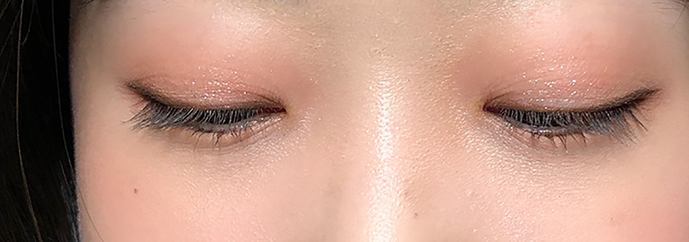

이제는 촉촉광택 입술,
롬앤 GLASTING WATER TINT
촉촉하고 광택있는 입술이 되고 싶어
어김없이 돌아온 새 학기, 이번에는 무언가 새로운 변화를 주고 싶어졌다.
촉촉하고 광택 있는 입술.. 근래 들어 왜 이렇게 매력적으로 보이는지.
이제는 외면해왔던 소리치는 나의 입술 각질들의 소리를 들어줄 때!
몇 년 동안 고집하던 매트한 립 제품을 내려놓고 촉촉광택 립 제품에 도전해보기로 한다!
'롬앤 GLASTING WATER TINT가 촉촉,광택 틴트로 괜찮다고?
무작정 가서 사지는 않는다.
대략 2만원 상당의 나의 귀한 돈을 허투루 날리지 않기 위해서 리뷰 검색은 필수다.
그렇게 내 레이더망에 걸린 ‘롬앤glasting water tint’, 일명 유리광택틴트.
많은 경쟁제품을 뚫고 가장 내 눈에 띈 제품이다. 바로 구매하러 가본다.
*비슷한 촉촉,광택 틴트 정보는 글 하단 참고
일명 '물막, 유리광택 틴트'
내가 구매한 색상은 ’01 coral mist’ 색상.
바르고 난 후 서서히 물막이 차오르는 것 같다해서 물막 틴트라 불리는데, 먼저 손목에 테스트해본다.
물막틴트, 유리광택틴트라는 이름에 맞게 광택이 느껴진다.
 젤 제형으로 발림성이 부드럽기 때문에 입술 주름부각이나 각질 부각은 매우 적은 편이었다.
그러나 젤 제형상 워터 틴트보다 두껍게 올라간다.
얇게 발리는 느낌을 특히나 좋아한다면 테스트 후 구매하는 것을 추천한다.
젤 제형으로 발림성이 부드럽기 때문에 입술 주름부각이나 각질 부각은 매우 적은 편이었다.
그러나 젤 제형상 워터 틴트보다 두껍게 올라간다.
얇게 발리는 느낌을 특히나 좋아한다면 테스트 후 구매하는 것을 추천한다.
바르기 전 솔 양 조절! 얇게 여러번 바르기
솔에 묻은 양을 그대로 발랐더니 입술 안쪽에 뭉치는 현상이 발생했다.
촉촉한 젤 제형은 그 특성 상 이리저리 밀리기 때문에 양 조절이 중요하다.
솔에 묻은 양을 덜고 얇게 여러번 발라봤다.


광택이 부담스러울 때 해결책
평소 안쓰던 광택있는 립 제품을 사용하면 그 광택이 다소 부담스러울 수 있다.
은은한 광택을 내기 위해서 매트한 립 제품을 베이스로 바르고 그 위에 광택있는 립제품을 소량만 발라보자. 부담스럽지 않은 은은한 광을 느낄 수 있다.
펄 있는 섀도우와 함께 써보자
무엇이든 통일감은 중요하다.
어딘가 입술만 동동 떠보이는 느낌에 통일감을 주기 위해 펄 있는 섀도우를 함께 사용해봤다.
광택있는 입술과 눈 위에 펄이 전체적으로 조화를 이뤄 전 보다 자연스러워졌다.
특별한 날이라면 굵은 펄을 올려봐도 잘 어울린다.

입술 각질 지겹다면 망설이지 말고 시도해보자
안어울린다고 생각해 그 동안 사용하지 못했던 광택있는 립 제품.
안어울려보이는 것도 어울리게 만들 수 있는 방법이 있다!
가끔은 기분전환으로 새로운 것을 시도해보자.
롬앤glasting water tint 총 평
광택 | 강함
촉촉함 | 높음
착색력 | 보통
각질부각 | 거의 없음
주름부각 | 거의 없음
뭉침 | 조금 있음
비슷한 제품 비교 |
글래스팅 워터 틴트 vs 쥬시래스팅 틴트
탱글탱글함 ) 글래스팅<쥬시래스팅
발리는 두께 ) 글래스팅 < 쥬시래스팅
착색 ) 글래스팅 > 쥬시래스팅